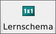

MAGuS-Style |
Für die Notebook-Tabulatoren (oder auch -reiter) gibt es sowohl MAGuS-eigene, als auch an WindowsXP angelehnte Icons. |
Win32-Style |
 |
Grundwerte:
Auf dieser Seite werden die Grundeigenschaften und Grundlegenden Werte der Figuren ermittelt und verwaltet. |
|
 |
Lernschema:
Hier werden die alle Fertigkeiten und Eigenschaften bestimmt, die ein Abenteurer bei seiner Erschaffung besitzt |
 |
 |
Steigern:
Auf der Notebook-Seite "Steigern" findet das Steigern und die Verwaltung der Abenteurer statt. |
 |
| |
Beschreibung:
Eine ausführliche Beschreibung des Abenteurers kann auf der Notebookseite "Beschreibung" erstellt werden. |
|
 |
Ausrüstung:
Ein Abenteurer erhält seine Ausrüstung auf auf dieser Notebookseite. |
|
 |
Eigenschaften:
Auf der Seite "Eigenschaften" können verschiedene Eigenschaften von MAGuS -wie das Erscheinungsbild und
verwendete Hilfsprogramme- verändert werden |
|
 |
Über MAGuS:
Diese Notebookseite informiert u.a. über die Programmautoren und Copyright Vermerke. |
|
 |
Neuigkeiten:
Informationen zur aktuelle MAGuS-Version
|
 |
 |
Zufallsgenerator:
MAGuS bietet hier die Mölichkeit, (Nichtspieler-)Figuren schnell und regelkonform nach dem Zufallsprinzip zu
generieren und zu steigern. |
 |